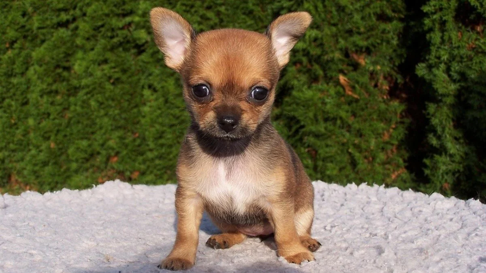

La pequeña de la imagen se llama Bombón. La encontramos abandonada en una carretera, tan pequeñita que aún no sabía caminar y con los ojitos cerrados. Era apenas una recién nacida, indefensa y sin su madre. Al recogerla, la llevamos de inmediato al veterinario más cercano, donde recibió los cuidados necesarios. A pesar de su frágil estado, Bombón demostró ser una perrita increíblemente fuerte y con muchas ganas de vivir. Se recuperó muy rápido, y desde entonces no ha dejado de sorprendernos con su energía y cariño. Bombón es juguetona, curiosa y un poco traviesa, como todos los cachorros, pero sobre todo es muy amorosa. Le encanta que le hagan mimos, corretear por el jardín y dormir abrazada a su manta favorita. Es de esas perritas que te siguen a todas partes, que te miran con ternura y que te hacen sonreír incluso en los días difíciles. Adoptar a Bombón es mucho más que darle un hogar; es abrir tu vida a una compañera fiel que te dará amor incondicional. Ella ya ha sufrido el abandono una vez, y aún así conserva la dulzura y la alegría. Busca una familia que la quiera como merece, que la cuide y le dé el amor que nunca tuvo en sus primeros días de vida. Si estás pensando en adoptar, Bombón es una elección maravillosa: no solo estás salvando una vida, sino ganando una amiga para siempre.
